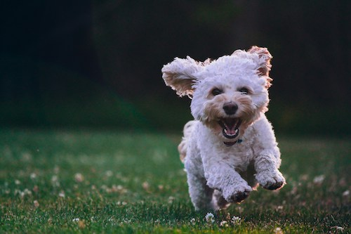

Why I prefer Dogs over cats
I've always thought dogs are so enthusiastic and they are the most heartwarming pets ever. If your sad then they are always there to make you happy. I think they are super cute and cuddly. They are always willing to play with you and they have lots of energy. They are also very protective. If you ever have a child, that dog will guard it with his life. No more home intruders once they see a giant dog like a pitbill or a great dane. Even a chihuahua will feel like he's the biggest dog out there. Me personally, it would be amaing to have a german shepard.

Photo by Joe Caione on Unsplash